해양공학기사 (2009-05-10 기출문제)
1과목: 해양학개론
1. 기조력의 크기와 달까지의 거리와의 관계가 옳은 것은?
- 기조력은 달까지의 거리에 반비례
- 기조력은 달까지의 거리에 제곱에 반비례
- 기조력은 달까지의 거리에 3승에 반비례
- 기조력은 달까지의 거리에 4승에 반비례
(정답률: 알수없음)

2. 용승(Upwelling) 해역에 대한 설명 중 틀린 것은?
- 저층의 물이 표층으로 올라온다.
- 해안선이 남북방향으로 놓인 곳에서는 용승이 있으나 동서방향으로 놓인 곳에서는 없다.
- 주변해역보다 표면 수온이 낮다.
- 영양염이 풍부하여 생물활동이 왕성하다.
(정답률: 알수없음)
3. 엘니뇨(El Nino) 현상은 어디에서 주로 일어나는가?
- 동남아시아 연안
- 적도태평양의 동부
- 북서아메리카 연안
- 남동태평양 전역
(정답률: 알수없음)
4. 대양에서 영구수온약층(permenent thermocline)이 가장 깊은 수심에서 나타나는 해역은?
- 적도부근
- 위도 20° 부근
- 위도 40° 부근
- 극지방
(정답률: 알수없음)
5. 열점(Hot Spot)과 관계가 가장 깊은 것은?
- 솔로몬 제도
- 하와이 제도
- 알류산 열도
- 파푸아뉴우기니아
(정답률: 알수없음)
6. 해수 중 인산염 농도변화를 설명한 내용 중 잘못된 것은?
- 겨울철에 높은 농도를 보인다.
- 봄철에 낮은 농도를 보인다.
- 하루 중 해뜨기 직전에 최소 농도를 보인다.
- 식물의 활동이 왕성한 시간에 최소 농도를 보인다.
(정답률: 알수없음)
7. 심해저 망간단괴를 상대적으로 많이 채취할 수 있는 장점은 있으나 주변의 퇴적물을 채취하지 못하는 단점을 가진 방법은?
- Grab식
- Dredge식
- Piston식
- Siphon식
(정답률: 알수없음)
8. 미나마타병과 이타이 이타이병의 원인이 되는 해양오염 물질은 각각 무엇인가?
- 납, 구리
- 수은, 카드뮴
- 구리, 수은
- 납, 카드뮴
(정답률: 알수없음)
9. 해빈 물질의 특성과 거리가 먼 것은?
- 분급이 양호하다.
- 원마도는 둥근 상태이다.
- 대부분 진흙으로 구성된다.
- 연흔이 출현한다.
(정답률: 알수없음)
10. 대기와 해양간의 탄소 교환에 중요한 역할을 하는 CO2의 분압과 해수의 pH에 관련된 내용이 옳게 설명된 것은?
- 해양보다 대기중의 CO2 분압이 높으면 CO2는 해양으로부터 대기로 공급된다.
- 해수의 pH가 감소하면 CO2는 해양으로부터 대기로 공급된다.
- 해양의 기초생산이 활발하면 CO2는 해양으로부터 대기로 공급된다.
- 기초생산이 적고 pH가 적은 저위도 해역은 CO2가 대기로부터 해양으로 공급된다.
(정답률: 알수없음)
11. 해양의 표면염분 분포에 가장 큰 영향을 주는 것은?
- 증발-강수량의 차
- 바람분포
- 수온분포
- 심층해류
(정답률: 알수없음)
12. 고기압 지역에 나타나는 현상으로 맞는 것은?
- 바람은 북반구에서 반시계 방향으로 불어 들어온다.
- 상층부에 하강기류가 발생한다.
- 구름이 생성되고 비가 온다.
- 지표면에서는 공기가 수렴한다.
(정답률: 알수없음)
13. 밀도류에 대한 설명 중 옳은 것은?
- 해수의 용존산소와 깊은 관계가 있다.
- 밀도차를 없애기 위해 생기는 해수의 유동이다.
- 바람의 방향과 일치한다.
- 원인으로는 태양의 인력이 있다.
(정답률: 알수없음)
14. 해양판과 해양판이 수렴하는 수렴경계면에서 나타나는 대표적인 해저지형(장소)은?
- 동태평양산맥
- 알류산 열도
- 하와이 열도
- 동아프리카 열곡대
(정답률: 알수없음)
15. 파랑이 심해에서 전파될 때 파의 속도는?
- 파장에만 관계
- 파장과 수심 모두 관계
- 수심에만 관계
- 파장과 수심 모두 무관
(정답률: 알수없음)
16. 염분 측정에 이용되는 대표적인 물리적 성질은?
- 지구자기
- 빛의 굴절
- 산성도
- 전기전도도
(정답률: 알수없음)
17. Ekman의 취송류이론에서 상부마찰심도의 해류는 해표면 해류의 몇 배로 나타나는가?
- e
- e-1/π
- e-1
- e-π
(정답률: 알수없음)
18. 다음 중 지구 내부의 열을 공급하는 가장 주된 작용은?
- 방사성 물질의 붕괴
- 조석 작용
- 태양열
- 맨틀 대류
(정답률: 알수없음)
19. 해양과 대기의 상호작용을 설명한 내용 중 틀린 것은?
- 바닷물의 비열이 높기 때문에 바닷물 1g을 1℃ 높이는데 1cal 이상이 필요하다.
- 해양과 대기의 가열이나 냉각이 있음에도 평균적인 열수지의 균형을 이루고 있다.
- 해류와 대기의 날씨는 물과 공기의 불균등한 태양 가열에 의한 결과이다.
- 해류는 열대에서 극지방으로 열을 운반한다.
(정답률: 알수없음)
20. 망간단괴 성분 중 경제적인 가치가 없는 것은?
- 니켈
- 코발트
- 망간
- 철
(정답률: 알수없음)
2과목: 해양수리학
21. 수리모형 실험에서 원형과 모형 사이에 상사시키기 가장 어려운 것은?
- 유량
- 유속
- 길이
- 조도계수
(정답률: 알수없음)
22. 동점성계수의 차원은?
- [L2T-1]
- [LT-2]
- [ML-1T-1]
- [MLT-1]
(정답률: 알수없음)
23. 토사 입자의 해저 이동시 마모되는 정보의 지표가 되는 것은?
- 변환율
- 원상율
- 환율
- 공극율
(정답률: 알수없음)
24. 파의 천수계수(Ks)에 영향을 미치지 않는 것은?
- 파속(C)
- 파수(k)
- 수심(h)
- 파향(θ)
(정답률: 알수없음)
25. 표사로 인한 해빈의 특수한 평면 형상 중에서 자연해안, 특히 결궤성 해안에서는 정선(汀線)이 원호상으로 드나드는 일이 많다. 이와 같은 원호상의 정선은?
- Cusp
- Sand spit
- erosion
- Berm ridge
(정답률: 알수없음)
26. 해안선의 변형을 예측하는데 주로 사용하는 모델은?
- two-line 모델
- one-line 모델
- multi-line 모델
- 3-D 모델
(정답률: 알수없음)
27. 주기 3분의 장주기 파랑에 의한 공진현상이 일어날 수 있는 수심이 25m이며, 한쪽이 폐쇄된 내만의 특성길이는?
- 275m
- 549m
- 704m
- 1098m
(정답률: 알수없음)
28. 조석이 있는 2개의 해역을 잇는 해협이 있다. 이 해협의 수심과 폭이 일정하며, 해협 양끝에서의 최대 수위차가 1m인 경우 해협 중앙부에서의 최대 조류속도는?
- 3.13 m/sec
- 2.21 m/sec
- 4.43 m/sec
- 1.56 m/sec
(정답률: 알수없음)
29. 모래입자의 평균입경이 d(cm), 해수의 밀도를 ρ(g/cm3), 모래입자의 밀도를 σ(g/cm3), 동점성계수를 ν(cm2/sec) 라고 할 때 Stokes의 한계침강속도 Vc(cm/sec)를 나타낸 식은?
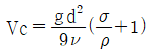
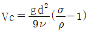
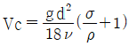
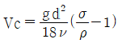
(정답률: 알수없음)
30. 취송류(wind drift current)에 관한 설명 중 틀린 것은?
- 만 내의 물질분산에는 영향을 미치지 않는다.
- 취송류의 해석에는 주로 Ekman이론이 적용된다.
- 취송류의 방향은 표층과 저층에서 일치하지 않는 경우가 많다.
- 취송류의 발생에는 마찰력과 코리올리스력(coriolis force)의 중요하다.
(정답률: 알수없음)
31. 물체의 저항과 관련된 설명 중 틀린 것은?
- 일반적인 물체에 대해서 레이놀즈수가 비교적 작을 때 표면저항이 크게 나타난다.
- 레이놀즈수가 상당히 크게 되면 유선이 물체표면에서 떨어져 나가고 물체의 후면에 후류(wake)가 생긴다.
- 후류 속에 있어서는 압력이 상승하고 물체의 흐름방향으로 당기게 된다.
- 마찰저항 또는 표면저항은 물체표면적과 관계가 있다.
(정답률: 알수없음)
32. 이안류에 대한 설명으로 틀린 것은?
- 서로 마주쳐 흐르는 병안류가 만나는 곳에서 생긴다.
- 해저구배가 비교적 완만한 해안에서 발생한다.
- 이안류의 방향은 연안과 평행하게 발생한다.
- 외해로부터 규칙적인 너울이 해안선에 직각으로 입사할 때에는 이안류가 발생한다.
(정답률: 알수없음)
33. 파의 운동에 관한 설명 중 틀린 것은?
- 물입자 운동의 진행방향 가속도는 정수면상에서 가장 크다.
- 정수면보다 윗부분에서의 물입자 운동은 파의 진행방향과 같다.
- 정수면보다 아랫부분에서의 물입자 운동은 파의 진행방향과 반대방향이다.
- 물입자 속도의 진행방향 속도는 정수면상에서 가장 크다.
(정답률: 알수없음)
34. 톰보로(Tombolo) 지형에 대한 설명으로 옳은 것은?
- 모래사장에 면하고 있는 하구에서 연안표사에 의해서 생기는 가늘고 긴 돌출지형
- 해양과 나누어진 길고 얕은 바다 호수지형
- 해빈의 후안에 좁게 발달한 평평하거나 혹은 육지쪽으로 약간 경사진 퇴적지형
- 사취가 길게 연장되어 섬과 육지가 연결된 지형
(정답률: 알수없음)
35. 지중해를 그림과 같이 단순모형화 하였을 때 지중해 입구 상층부에서는 36.25‰의 염분을 가진 물이 지중해로 유입되고, 저층부에서는 37.75‰의 염분을 가진 물이 지중해에서 대서양으로 유출되며, 지중해 내에서 단위시간당 증발량이 70×103 m3/s라면 단위시간당 지중해로 유입되는 해수량은?
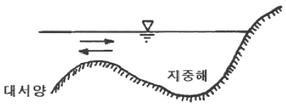
- 0.5×106 m3/s
- 1.76×106 m3/s
- 2.5×106 m3/s
- 5.2×106 m3/s
(정답률: 알수없음)
36. 파랑의 굴절현상의 해석에 이용되는 스넬(Snell)법칙은? (단, α1 : 파랑의 입사각, α2 : 파랑의 굴절각, C1 : 파랑의 입사파속, C2 : 파랑의 굴절파속)
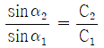
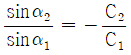
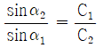
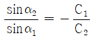
(정답률: 알수없음)
37. 해빈 표사시로 채취 시 주의사항이 아닌 것은?
- 해빈의 특성을 잘 나타내는 표사시료를 채취할 것
- 채취 시 그리고 채취 후 표사시료의 성질을 교란시키지 말 것
- 채취기를 해빈 또는 해저면 속으로 수 cm 압입시켜서 표사시료를 채취할 것
- 정밀한 분석을 위해 표사시료의 입경이 일정하지 않은 것을 채취할 것
(정답률: 알수없음)
38. 수평축척 1/1600, 연직축척 1/100인 모형수조에서 조류의 모형실험을 실시하였다. 이 때 원형에서 12시간의 조석수기에 해당하는 모형에서의 시간과, 모형실험에서 10cm/sec의 유속에 해당하는 원형에서 유속은?
- 18분, 100cm/sec
- 18분, 400cm/sec
- 72분, 100cm/sec
- 72분, 400cm/sec
(정답률: 알수없음)
39. 다음 중 주기가 가장 긴 분조는?
- MS4 분조
- M2 분조
- K1 분조
- S2 분조
(정답률: 알수없음)
40. 유의파와 최대파의 설명으로 틀린 것은?
- 유의파고는 H1/3, 유의파 주기는 T1/3이다.
- 최대파의 파고를 Hmax, 최대파의 주기를 Tmax라고 한다.
- 유의파는 파고가 작은 쪽으로부터 1/3을 잘라내어 평균한 파이다.
- 1/10 최대평균파는 1/10 최대파의 평균을 파고로 하는 파이다.
(정답률: 알수없음)
3과목: 해양구조공학
41. 방파제의 마루높이를 결정할 때 고려해야 할 중요한 인자와 가장 거리가 먼 것은?
- 파고
- 파향
- 조위
- 단면현상
(정답률: 알수없음)
42. 한변의 길이가 a인 정사각형 단면의 대각선 축에 관한 단면 2차모멘트는?
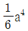
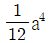
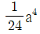
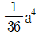
(정답률: 알수없음)
43. H1/3가 6m인 파랑내습이 예상되는 지점에 KD값이 8인 이형콘크리트 블록으로 피복한 사면제(cot θ = 1.25)를 건설하는 경우 블록의 소요 중량은? (단, 콘크리트 블록의 대기중 단위체적 중량은 2.3 t/m3, 해수의 단위체적중량은 1.03 t/m3 이다.)
- 약 30.5 ton
- 약 26.5 ton
- 약 20.5 ton
- 약 18.5 ton
(정답률: 알수없음)
44. 두 개의 집중하중이 아래 그림과 같이 작용할 때 최대 처짐각은?
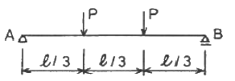
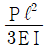
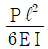
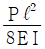
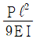
(정답률: 알수없음)
45. 다음 그림과 같은 구조물의 C점에 100t의 하중이 가해져서 C점과 D점의 처짐이 각각 4cm, 5cm가 발생하였다. 이 구조물의 D점에서만 150t의 하중이 가해졌을 때 C점에서의 처짐의 크기는?
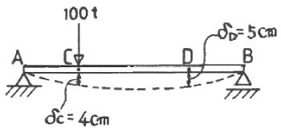
- 6cm
- 7cm
- 7.5cm
- 9cm
(정답률: 알수없음)
46. 아래의 구조물에서 단면 a-a에 발생하는 최대 휨응력의 크기는?
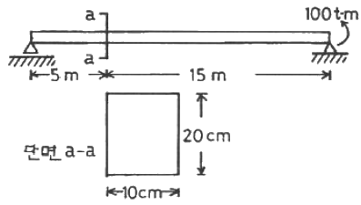
- 2.25 t/cm2
- 3.75 t/cm2
- 5.25 t/cm2
- 7.50 t/cm2
(정답률: 알수없음)
47. 다음 중 계류시설이 아닌 것은?
- 잔교
- 안벽
- 돌핀
- 도크
(정답률: 알수없음)
48. 물양장에 대한 설명으로 틀린 것은?
- 소형선박의 계류시설이다.
- 물양장의 수심은 선박의 홀수로부터 정해진다.
- 사면경사를 완만하게 한 사면식이 하역에 편리하다.
- 하역기계의 활용도를 높이기 위해 계단식이 사용된다.
(정답률: 알수없음)
49. 다음 중 슬립(slip)을 설명한 것은?
- 선박이 정박하고 하역을 할 수 있고, 또 대기하는 수역
- 소형선박을 계류하기 위하여 방파제 등으로 둘러싸인 수역
- 돌제와 돌제 사이의 수역
- 각종 선박 한 척이 점유하는 수역
(정답률: 알수없음)
50. 말뚝식 해양구조물에 대한 설명으로 틀린 것은?
- 말뚝의 근입깊이는 연직력과 수평력에 대하여 검토되어야 한다.
- 말뚝의 축방향 지지력은 말뚝 선단 지지력과 말뚝 주변 마찰에 의한 지지력으로 구성된다.
- 말뚝의 좌굴 저항을 증가시키기 위해서는 말뚝의 길이를 증가시켜야 한다.
- 경사말뚝 구조에서 수평하중은 모두 경사 말뚝이 분담되는 것으로 계산한다.
(정답률: 알수없음)
51. 경사제의 장점이 아닌 것은?
- 연약지반에 적합하다.
- 파괴된 경우 복구공사가 용이하다.
- 시설설비와 시공법이 간단하다.
- 수심이 깊은 곳에서도 재료가 적게 든다.
(정답률: 알수없음)
52. 다음과 같은 부재가 기온이 15℃에서 30℃로 증가함에 따라 2cm가 늘어났다면 다시 30℃에서 60℃로 증가할 때 늘어나는 길이는?
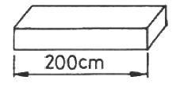
- 4cm
- 8cm
- 12cm
- 16cm
(정답률: 알수없음)
53. 다음 그림과 같은 1면 전단의 리벳이음으로 40t의 인장하중을 지지하려고 할 때 필요한 리벳의 개수는? (단, 리벳의 허용전단응력은 1500 kg/cm2, 허용지압응력은 2000kg/cm2, 리벳의 직경은 2cm 이다.)
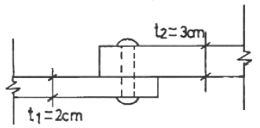
- 5개
- 6개
- 8개
- 9개
(정답률: 알수없음)
54. 다음 중 단위가 무차원인 것은?
- 변형률
- 탄성계수
- 수직응력
- 전단응력
(정답률: 알수없음)
55. 다음 단순보의 지점에서의 반력을 올바르게 나타낸 것은?
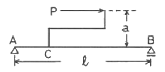
- 수직반력 :
 , 수평반력 : P(←)
, 수평반력 : P(←) - 수직반력 : 0, 수평반력 : P(←)
- 수직반력 :
 , 수평반력 : 0
, 수평반력 : 0 - 수직반력 :
 , 수평반력 : P(←)
, 수평반력 : P(←)
(정답률: 알수없음)
56. 해양생산플랫폼을 rigid type, compliant type, floating type으로 구분할 때, 다음 중 rigid type의 구조물은?
- 반잠수식 플래트폼(semi-submersible platform)
- 인장각 플래트폼(tension leg platform)
- 가이드 타워(guyed tower)
- 자켓(jacket)
(정답률: 알수없음)
57. 석유굴착용 플래트폼이 외해의 심한 자연조건 아래에 설치될 때 주요한 외력이 아닌 것은?
- 선박의 접안력
- 파랑의 파력
- 바람의 풍력
- 지진지역의 지진력
(정답률: 알수없음)
58. 부체운동 중 변위에 대한 복원력이 없는 것은?
- 횡요(rolling)
- 종요(pitching)
- 좌우요(swaying)
- 상하요(heaving)
(정답률: 알수없음)
59. 푼툰(pontoon)에 대한 설명 중 틀린 것은?
- 선박의 계류용 시설로 이용된다.
- 수밀성은 훼로시멘트재 ＞ PC재 ＞ 철근콘크리트재의 순서이다.
- 부잔교의 주체이다.
- 푼툰의 건현은 보통 1m 정도의 것이 많다.
(정답률: 알수없음)
60. 해양구조물 설계 시 중요하게 고려하는 작업상태가 아닌 것은?
- 조업중 상태(operationg condition)
- 밸러스트 상태(ballast condition)
- 이동중 상태(transit condition)
- 극한 상태(syrvival condition)
(정답률: 알수없음)
4과목: 측량학
61. 촬영고도 4000m에서 16cm 초점거리의 광각사진기로 시속 200km의 운항속도로 항공사진을 촬영할 때 사진 노출점간의 최소 소요 노출시간은? (단, 사진의 크기 23cm × 23cm, 종중복도 60% 이다.)
- 35.4 sec
- 41.4 sec
- 47.4 sec
- 53.4 sec
(정답률: 알수없음)
62. 카메라의 초점거리가 150mm, 대지표고 100m, 촬영고도 950m 일 때 항공사진의 축척값에 가장 가까운 것은?
- 약 0.000176
- 약 0.000157
- 약 0.000142
- 약 0.0015
(정답률: 알수없음)
63. GPS측량의 DOP(정밀도 저하율) 특징 중 틀린 것은?
- 수치가 클수록 부정확하다.
- 지표에서 가장 좋은 배치 상태일 때를 1로 한다.
- PDOP를 위한 최적의 위성배치는 한 위성은 관측자의 머리 위에 위치하고, 다른 세 위성이 각각 120°를 이룰 때이다.
- 수평정밀도 저하율(HDOP)은 3 ~ 5가 적당하다.
(정답률: 알수없음)
64. 항해용 해도에 관한 설명 중 틀린 것은?
- 총도는 광대한 해역을 일괄하여 볼 수 있는 해도로서 축척은 1/400만 이하이다.
- 원양항해에 사용되는 원양항해도는 축척이 1/100만 이하이다.
- 근해항해도는 선박위치를 육지에 등대, 등부표 등에 의해 결정할 수 있는 도면으로서 축척은 1/30만 이하이다.
- 해안도는 연안의 제반지형, 물표가 상세히 표시된 도면으로서 축척 1/1만 이하로 통일된 연속도로 함을 원칙으로 한다.
(정답률: 알수없음)
65. 음파의 주파수에 대한 설명 중 옳은 것은?
- 음향측심에 쓰이는 음향펄스의 주파수는 일반적으로 10 ~ 350kHz이다.
- 주파수가 높을수록 음파의 지향성은 낮아진다.
- 주파수가 낮을수록 분해능은 증가한다.
- 주파수가 높을수록 가측심도는 증가한다.
(정답률: 알수없음)
66. 트래버스 측량에서 정확도가 가장 좋은 방법은?
- 폐합 트래버스
- 결합 트래버스
- 개방 트래버스
- 폐쇄 트래버스
(정답률: 알수없음)
67. 양단면의 면적이 A1 = 65m2, A2 = 30m2 이고, 높이가 18m 일 때 체적은?
- 855m3
- 912m3
- 1012m3
- 1062m3
(정답률: 알수없음)
68. 해상위치측정에서 시간차에 의한 거리차측정방식을 이용하여 거리를 측정하는 기계로 쌍곡선방식과 원호방식을 모두 채용할 수 있으며, 측정거리는 주간은 75mile, 야간은 50mile 정도 되는 것은?
- Hi-Fix
- Autotape(DM-40A)
- Raydist(DR-S system)
- Trisponder
(정답률: 알수없음)
69. 최소제곱법에 의해 처리할 수 있는 오차는?
- 정오차
- 우연오차
- 잔차
- 과대오차
(정답률: 알수없음)
70. 음파탐사의 주파수(f)가 3kHz라면 파장(λ)은?
- 0.5m
- 1.0m
- 1.5m
- 2.0m
(정답률: 알수없음)
71. 채취한 해저질의 입도분석에 사용되는 방법이 아닌 것은?
- 체를 이용한 분류법
- 침강법
- 현미경법
- 육안법
(정답률: 알수없음)
72. 해저 지질조사 시의 직접조사 방법이 아닌 것은?
- 예인방식
- 그랩방식
- 지자기방식
- 주상채취방식
(정답률: 알수없음)
73. 음향측심의 보정사항이 아닌 것은?
- 음속도보정
- 흘수보정
- 표고보정
- 조고보정
(정답률: 알수없음)
74. 해수중 음파의 강도(I)에 대한 설명 중 틀린 것은?
- 음원 거리의 제곱에 반비례한다.
- 유효음압의 제곱에 반비례한다.
- 음향저항에 반비례한다.
- 음압 또는 음강도의 단위로는 벨(B) 또는 데시벨(dB)을 많이 사용한다.
(정답률: 알수없음)
75. 위도 80° 이상의 양극지역의 좌표를 표시하는데 가장 적합하게 사용되는 것은?
- UTM 좌표계
- UPS 좌표계
- TM 좌표계
- ITRF 좌표계
(정답률: 알수없음)
76. 지구관측 및 원격탐사를 위한 위성이 아닌 것은?
- Quickbird 위성
- IKONOS 위성
- 아리랑 2호
- GPS 위성
(정답률: 알수없음)
77. 음향측심기에서 음속의 기준은?
- 150 m/sec
- 340 m/sec
- 1500 m/sec
- 2800 m/sec
(정답률: 알수없음)
78. 연안역의 외해에 정박된 선박이 그 위치를 결정하기 위해서 이용되는 것으로 평판측량에도 널리 이용되는 위치결정방법은?
- 방사법
- 편각법
- 교회법
- 전진법
(정답률: 알수없음)
79. 항공사진의 특수 3점이 아닌 것은?
- 보조점
- 주점
- 연직점
- 등각점
(정답률: 알수없음)
80. 등고선의 성질 중 틀린 것은?
- 등고선의 간격이 넓은 곳은 경사가 급하다.
- 동일 등고선상에 모든 점의 높이는 동일하다.
- 등고선은 반드시 폐합하며 단절되지 않는다.
- 높이가 다른 등고선의 경우 절벽에서는 교차한다.
(정답률: 알수없음)
5과목: 재료공학
81. 다음 그림과 같은 등변분포하중을 받는 단순보에서 C점의 휨모멘트는?
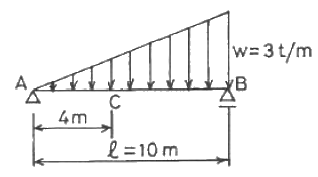
- 20 t·m
- 16.8 t·m
- 23.2 t·m
- 8.4 t·m
(정답률: 알수없음)
82. 재료에 지속하중이 장시간에 걸쳐 작용할 때 시간의 경과와 함께 변형이 증가하는 현상은?
- 크리프
- 항복
- 피로
- 탄성
(정답률: 알수없음)
83. 해양에서의 철강 재료의 부식 요인과 가장 거리가 먼 것은?
- 용존산소
- 염분농도
- 융점
- 수온
(정답률: 알수없음)
84. 해양콘크리트의 물-시멘트비에 대한 설명 중 틀린 것은?
- 내구성으로 정해진 해중의 AE콘크리트의 최대 물-시멘트비는 50% 이다.
- 물보라지역의 물-시멘트비는 해중에 비해 약간 크게 해야 한다.
- 공장제품의 경우는 현장시공의 경우에 비해 물-시멘트비를 다소 크게 해도 좋다.
- 환경조건에 따라 물-시멘트비를 달리하고 잇다.
(정답률: 알수없음)
85. 해양 콘크리트에 사용된 철근의 부식을 최소화 하기 위한 방법이 아닌 것은?
- 철근의 피복두께를 충분히 할 것
- 철근 자체에 방부처리를 하지 말 것
- 수밀성이 큰 콘크리트로 시공할 것
- 균열폭을 적게 할 것
(정답률: 알수없음)
86. 지름 4cm, 길이 100cm의 봉에 6000kg의 인장하중을 부과하였다면 축방향의 신장은? (단, E = 0.63 × 106 kg/cm2)
- 7.58 × 10-2 cm
- 7.58 × 10-3 cm
- 8.58 × 10-2 cm
- 8.58 × 10-3 cm
(정답률: 알수없음)
87. 굳지 않은 콘크리트의 워커빌리티(workbility) 측정시험 방법이 아닌 것은?
- 슬럼프시험
- 캘리볼(Kelly Ball)관입시험
- 압력시험
- 리몰딩시험
(정답률: 알수없음)
88. 시멘트의 비중시험을 위하여 르 샤텔리(Le Chatelier) 비중병의 0.2mL 눈금까지 광유를 주입하고 시료를 64g 가하였을 때의 눈금이 22.4mL이면 이 시료의 비중은?
- 약 3.2
- 약 3.1
- 약 3.0
- 약 2.9
(정답률: 알수없음)
89. 길이 300m, 직경 50mm인 알루미늄 봉을 100kN으로 인장시험한 결과 봉의 길이가 0.3mm 늘어났고 지름은 0.012mm 만큼 감소하였다. 이 때 프와송비는?
- 0.24
- -0.24
- 4.17
- -4.17
(정답률: 알수없음)
90. 강을 필요한 용도와 목적에 맞도록 가열 또는 냉각함으로서 그 조직을 바꾸고 가공성, 강도, 점성 등의 성질을 개선시키기 위한 강의 열처리방법에 속하지 않는 것은?
- 풀림(annealing)
- 뜨임(tempering)
- 스트레칭(stretching)
- 블루잉(bluing)
(정답률: 알수없음)
91. 허용응역 이하로 긴장해 놓은 PS(Prestressing) 강재(Steel)가 긴장 후 몇 시간, 또는 수십 시간 후에 별안간 끊어지는 현상은?
- 응력부식(stress corrosion)
- 지연파괴(delayed fracture)
- 점식(pitting)
- 피로파괴(fatigue fracture)
(정답률: 알수없음)
92. 조강성, 내화성, 화학적 저항성이 높고 발열량이 커서 긴급을 요하는 공사, 내화용 콘크리트, 해양콘크리트 또는 한중공사의 시공에 이용될 수 있는 시멘트는?
- 고로시멘트
- 실리카시멘트
- 알루미나시멘트
- 내황산염포틀랜드시멘트
(정답률: 알수없음)
93. 골재의 조립률 설명으로 틀린 것은?
- 골재의 입도를 수량적으로 표시한 것으로 잔골재는 2.3 ~ 3.1 사이가 적당하다.
- 조립률은 입도의 변동형태의 판단이나 콘크리트의 배합 설계 등에 편리하게 사용할 수 있다.
- 조립률이 큰 값일수록 작은 입자가 많이 포함되어 있다는 것을 의미한다.
- 1개의 조립률에 해당하는 입도는 무수히 존재할 수 있다.
(정답률: 알수없음)
94. 콘크리트의 압축강도를 측정하는 방법으로 테스트 해머에 의한 강도 평가방법은?
- 주파수 시험법
- 반발경도법
- 외관조사
- 초음파 속도법
(정답률: 알수없음)
95. 1000kg/cm 의 비틀림 모멘트가 작용하는 직경 6cm인 둥근 막대의 최대전단응력은?
- 27.2 kg/cm2
- 23.6 kg/cm2
- 32.6 kg/cm2
- 28.5 kg/cm2
(정답률: 알수없음)
96. 철강재료의 녹방지용 페인트 성질을 열거한 내용 중 틀린 것은?
- 철강재료에 화학적 작용이 미치지 않을 것
- 충분한 탄성력이 있으며 견고하고, 마찰, 충격 등에도 잘 견디에 낼 수 있을 것
- 습기에 대해 침투성이 있을 것
- 될 수 있는 한 공기도 투과시키지 않을 것
(정답률: 알수없음)
97. 샬피 충격시험(Charpy V-Notch)에 관한 설명으로 틀린 것은?
- 강판에 충격을 가하여 파단되는데 필요한 에너지를 측정하는 시험이다.
- 시험편을 떨어져 있는 두 개의 지지대로 지지한 후 해머로 충격을 준다.
- 동일온도에서 3개의 시편을 시험하여 그 평균값으로 강재의 성질을 판단한다.
- 측정된 샬피 흡수에너지가 작을수록 충격에 저항하는 강재의 성질이 우수하다.
(정답률: 알수없음)
98. 단면이 30×50cm인 재료의 압축강도가 250 kg/cm2 이라면 이 재료에 가할 수 있는 압축력의 한계값은?
- 165 ton
- 250 ton
- 300 ton
- 375 ton
(정답률: 알수없음)
99. 해수 중에 포함된 다양한 염류 중에서 콘크리트에 침투하여 에트링가이트(Ettringite)를 생성, 콘크리트를 팽창시켜 내구성 저하와 균열을 유발하는 물질은?
- 염소이온
- 황산염이온
- 마그네슘이온
- 나트륨이온
(정답률: 알수없음)
100. 철근 콘크리트에 사용되는 보통 포틀랜드 시멘트(ordinary portland cement)에 관한 설명으로 틀린 것은?
- 타설 후 28일이 경과되어야 공사하중이나 자중을 지탱할 수 있다.
- 물을 만나면 응결(setting)하고 경화(hardening)한다.
- 점착성(adhesive)과 응집성(cohesive)을 가진다.
- 수화작용을 일으키는 수경성(hydraulic) 시멘트이다.
(정답률: 알수없음)